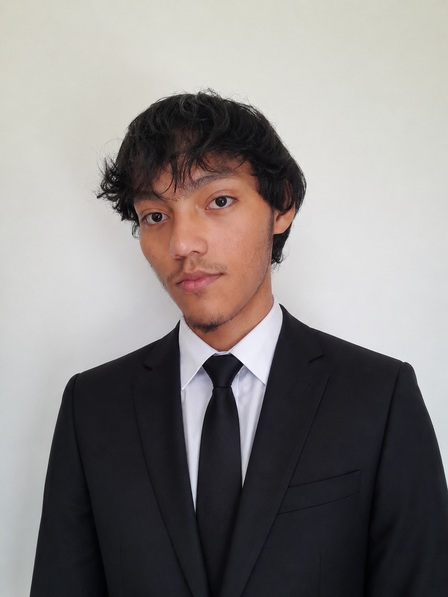
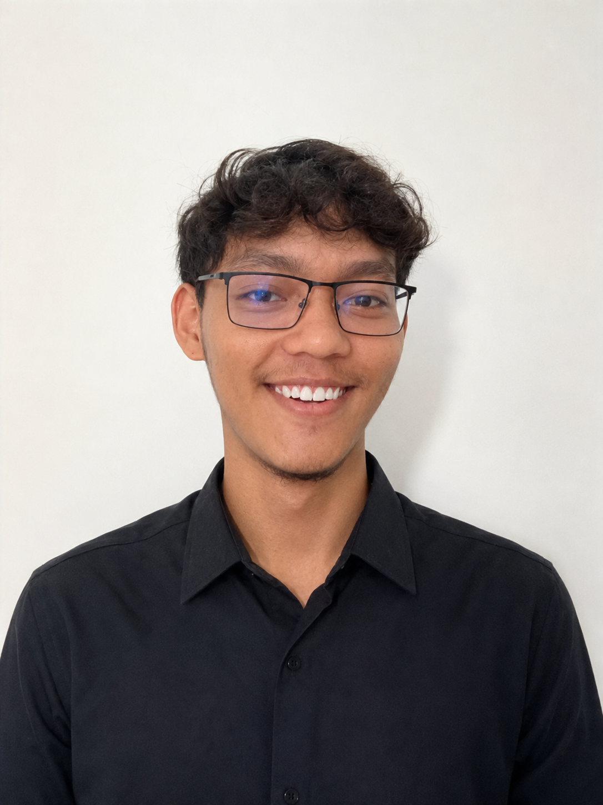

Meu primeiro contato com programação aconteceu durante o 8º ano, quando comecei a ter contato com tecnologia e programação por meio do programa EduTech. Foi uma das primeiras experiências que tive com esse universo e, mesmo ainda estando no começo, comecei a desenvolver curiosidade sobre como os programas funcionavam e como era possível criar coisas utilizando tecnologia.
Durante o Ensino Fundamental, participei do programa EduTech utilizando a plataforma Alura, entre 2022 e 2023. Nesse período, tive meu primeiro contato com programação e desenvolvimento de software por meio de cursos e atividades práticas.
Explorei diversas áreas da tecnologia, incluindo Java, JavaScript, HTML, CSS, SQL, Django, React, Ciência de Dados, Machine Learning e desenvolvimento de jogos. Também tive contato com ferramentas e conceitos como GitHub, Programação Orientada a Objetos, bancos de dados, APIs e desenvolvimento web.
Embora essa experiência tenha sido principalmente introdutória, com foco em conhecer as tecnologias, realizar os cursos e experimentar diferentes possibilidades, ela foi importante para despertar meu interesse por programação. Foi também uma das primeiras etapas da minha trajetória na área de tecnologia e me permitiu conhecer diferentes caminhos dentro do desenvolvimento de software.
Também tive meus primeiros contatos com HTML5 e CSS3. Comecei a entender como uma página da internet é estruturada e como diferentes elementos podem ser utilizados para organizar textos, imagens e outros conteúdos.
Foi nesse momento que comecei a perceber que uma página da internet não é apenas um conjunto de informações, mas possui uma estrutura que pode ser planejada e construída utilizando HTML e CSS.
Outro dos meus primeiros contatos com programação foi através do Scratch. Por ser uma ferramenta visual, ele me ajudou a entender conceitos básicos de lógica de programação de uma maneira mais simples e prática, principalmente através de blocos, condições, repetições e eventos.
Mesmo sendo uma ferramenta visual, o Scratch me ajudou a compreender que programar é transformar uma ideia em uma sequência de instruções.
No 9º ano, continuei minha formação com conteúdos relacionados ao Pensamento Computacional. Essa etapa foi importante para começar a desenvolver uma forma mais lógica de pensar na resolução de problemas.
Passei a entender melhor como dividir um problema em partes menores, identificar padrões, organizar informações e criar uma sequência de passos para chegar a uma solução.
Esses conhecimentos acabaram se tornando uma base importante para os estudos de programação que viriam posteriormente.
No 1º ano do Ensino Médio, tive contato com robótica. Essa experiência mostrou que a programação poderia ser utilizada não apenas em computadores, mas também para controlar dispositivos e criar soluções relacionadas ao mundo físico.
A robótica também me ajudou a desenvolver minha capacidade de trabalhar com projetos, lógica e resolução de problemas, além de ampliar minha visão sobre as possibilidades da tecnologia.
Foi uma experiência importante para perceber que programação pode interagir diretamente com o mundo físico.

No 2º ano do Ensino Médio, entrei no SESI SENAI e comecei o curso integrado de Desenvolvimento de Sistemas. Foi nessa etapa que comecei a estudar programação de uma forma mais estruturada e passei a ter contato com diferentes áreas relacionadas ao desenvolvimento de software.
Comecei a entender que desenvolver um sistema não envolve apenas escrever código. É necessário compreender o problema, planejar uma solução, organizar o projeto e pensar em como todas as partes irão funcionar juntas.
Um dos primeiros conteúdos que estudei no curso foi lógica de programação utilizando Portugol. Antes de me aprofundar em linguagens específicas, comecei a desenvolver minha capacidade de pensar em algoritmos e estruturar soluções.
Aprendi conceitos fundamentais como variáveis, operadores, estruturas condicionais, estruturas de repetição, entrada e saída de dados e outros elementos importantes para a programação.
Aprender lógica antes de uma linguagem específica me ajudou a entender que a linguagem é uma ferramenta, enquanto o raciocínio lógico está por trás da solução.
Depois de estudar lógica de programação, tive meu primeiro contato com Python. A linguagem acabou se tornando uma das principais ferramentas da minha trajetória de estudos.
Comecei pelos conceitos básicos e fui avançando gradualmente para estruturas condicionais, estruturas de repetição, listas, tuplas, dicionários, funções, módulos e outros recursos da linguagem.
Foi com Python que comecei a perceber de forma mais concreta o potencial de transformar ideias em programas funcionais.

No 3º ano do Ensino Médio, comecei a buscar uma evolução maior nos meus conhecimentos. Passei a estudar com mais autonomia e comecei a procurar maneiras de colocar em prática aquilo que estava aprendendo.
Essa fase também foi marcada pelo contato com diferentes tecnologias e pela criação de projetos próprios, buscando entender melhor quais áreas da programação mais me interessavam.
Durante o 3º ano, continuei evoluindo com Python e comecei a desenvolver projetos cada vez mais completos. Passei a utilizar os conhecimentos adquiridos para criar programas próprios e resolver problemas através da programação.
Um dos projetos que mais me ajudou nesse processo foi a criação de um pequeno Fliperama em Python. O projeto começou com jogos simples, mas foi evoluindo e passou a envolver sistemas de jogador, carteira, apostas, partidas, vitórias, derrotas, empates, ranking e outras funcionalidades.
Durante esse projeto, percebi que programar não significa apenas fazer um código funcionar. Também é necessário organizar o projeto, dividir responsabilidades, identificar erros e procurar maneiras melhores de estruturar uma solução.
Esse projeto foi importante para perceber a diferença entre simplesmente escrever código e realmente desenvolver um sistema.
Durante minha formação, também voltei a trabalhar com C++, principalmente em projetos relacionados à Internet das Coisas, ou IoT.
Essa experiência me permitiu relembrar conceitos da linguagem e entender melhor a relação entre programação, dispositivos eletrônicos e sistemas físicos.
Foi interessante perceber como o código pode ultrapassar a tela do computador e controlar elementos do mundo real.
Também tive meu primeiro contato com Java. Conhecer uma nova linguagem foi importante para perceber que existem diferentes formas de resolver problemas através da programação.
O contato com Java também me ajudou a comparar conceitos que já conhecia em Python com uma linguagem que possui características e uma estrutura diferente.
Conhecer diferentes linguagens começou a me mostrar que aprender programação vai além de dominar uma única tecnologia.
Outro conhecimento importante foi meu primeiro contato com modelagem de sistemas. Comecei a entender que, antes de desenvolver um sistema, é importante compreender o problema, identificar seus componentes e planejar como eles irão se relacionar.
Essa etapa ampliou minha visão sobre desenvolvimento de software e mostrou que existe uma parte importante do trabalho antes mesmo de começar a escrever o código.
Durante minha formação, também tive contato com metodologias e formas de trabalho utilizadas por grandes empresas no desenvolvimento de software.
Comecei a entender melhor conceitos relacionados à organização de projetos, divisão de tarefas, planejamento, trabalho em equipe e acompanhamento do desenvolvimento.
Isso me ajudou a perceber que o desenvolvimento profissional envolve tanto conhecimento técnico quanto organização e colaboração.
Depois de já ter tido contato com HTML5 e CSS3 anteriormente, voltei a estudar essas tecnologias com mais atenção.
Comecei novamente pelos fundamentos do HTML e passei a compreender melhor como as páginas da internet são estruturadas. Também comecei a entender melhor a função do CSS na apresentação e organização dos elementos de uma página.
Voltar ao HTML e CSS depois de já ter estudado programação me fez enxergar a estrutura das páginas de uma maneira diferente.
Também tive meu primeiro contato com banco de dados utilizando MySQL e MySQL Workbench.
Comecei a entender como as informações podem ser armazenadas, organizadas, consultadas e manipuladas dentro de um banco de dados.
Esse conhecimento ampliou minha visão sobre desenvolvimento de sistemas, pois percebi que uma aplicação precisa não apenas executar código, mas também trabalhar corretamente com os dados utilizados por ela.
Além da minha formação escolar, comecei a utilizar o Curso em Vídeo, do Gustavo Guanabara, para aprofundar meus conhecimentos e praticar programação.
Os cursos passaram a fazer parte da minha rotina de estudos e me ajudaram a revisar conteúdos, aprender novos conceitos e desenvolver projetos próprios.
No curso de Python, comecei revisando os fundamentos da linguagem e fui avançando gradualmente para conceitos mais complexos.
Estudei estruturas condicionais, estruturas de repetição, funções, listas, tuplas, dicionários, módulos e outros recursos da linguagem. Também comecei a estudar Programação Orientada a Objetos, aprendendo conceitos como classes, objetos, atributos, métodos e construtores.
O curso também me incentivou a praticar através de exercícios e projetos, o que considero uma das partes mais importantes do meu aprendizado.
Também comecei o curso de HTML5 e CSS3 para fortalecer minha base em desenvolvimento web.
Estou estudando como estruturar páginas utilizando HTML e como utilizar CSS para modificar sua aparência, organização e apresentação.
Meu objetivo é conseguir criar páginas cada vez mais completas e, posteriormente, utilizar JavaScript para adicionar interatividade.
Também comecei a estudar JavaScript para complementar meus conhecimentos em desenvolvimento web.
Quero aprender como utilizar a linguagem para criar páginas mais interativas e, futuramente, desenvolver aplicações web mais completas.
Comecei também a estudar Git e GitHub para aprender sobre controle de versão e organização de projetos.
Quero utilizar o GitHub para armazenar meus exercícios, projetos pessoais e trabalhos desenvolvidos durante minha formação. Minha intenção é construir gradualmente um portfólio que mostre minha evolução como programador.
Quero que meu GitHub seja mais do que um lugar para guardar códigos: quero que ele mostre minha evolução.
Também comecei a estudar PHP para conhecer outra tecnologia utilizada no desenvolvimento web e ampliar minha visão sobre diferentes linguagens e ferramentas.
Ao longo dos meus estudos, comecei a desenvolver projetos próprios como forma de colocar em prática os conhecimentos adquiridos. Esses projetos também me ajudam a entender melhor os problemas que aparecem durante o desenvolvimento e a buscar soluções por conta própria.
Um dos principais projetos que desenvolvi foi o Fliperama do Victor, um projeto em Python que reúne diferentes jogos e funcionalidades em um único sistema. Ao longo do desenvolvimento, trabalhei com conceitos como cadastro e informações do jogador, carteira, apostas, partidas, resultados, ranking e organização do código em diferentes módulos.
Além do fliperama, também desenvolvi projetos menores para praticar conceitos específicos, como sistemas bancários, geradores de senhas, jogos, programas de perguntas e respostas e outros exercícios.
Meu objetivo é continuar aumentando a complexidade dos projetos conforme meus conhecimentos evoluem.
Durante minha trajetória de estudos, tive contato com diferentes linguagens, tecnologias e ferramentas. Algumas delas foram utilizadas apenas de forma introdutória, enquanto outras fazem parte dos meus estudos atuais e possuem maior importância para meus objetivos profissionais.
Entre as principais tecnologias e ferramentas com as quais já tive contato estão Python, C++, Java, JavaScript, HTML5, CSS3, PHP, SQL, MySQL, Git, GitHub, Django e React, além de ferramentas relacionadas a bancos de dados, APIs, desenvolvimento web, Ciência de Dados, Machine Learning, IoT e desenvolvimento de jogos.
Atualmente, estou dando maior atenção a Python, HTML5, CSS3, JavaScript, SQL, Git e GitHub, buscando construir uma base sólida antes de avançar para projetos e tecnologias mais complexos.
Meu principal objetivo profissional é conseguir minha primeira oportunidade na área de tecnologia e continuar evoluindo como desenvolvedor.
Tenho interesse principalmente em desenvolvimento backend, Python, desenvolvimento web e inteligência artificial. Quero construir uma base sólida nessas áreas e, futuramente, ter conhecimento suficiente para desenvolver sistemas completos e trabalhar em projetos reais.
Sei que ainda estou no início da minha trajetória e que existe muito para aprender. Por isso, quero continuar estudando, praticando e desenvolvendo projetos que me obriguem a aplicar os conhecimentos adquiridos.
Meu objetivo é evoluir de forma consistente, passando de programas simples para sistemas cada vez mais estruturados e profissionais, enquanto construo um portfólio que mostre minha evolução ao longo do tempo.
Além de continuar estudando, quero utilizar a internet para compartilhar meus projetos e registrar minha evolução na programação. O GitHub será utilizado principalmente para organizar meus códigos, exercícios e projetos pessoais.
Também pretendo utilizar o LinkedIn para apresentar minha formação, experiências, conhecimentos e evolução profissional na área de tecnologia.
Meu objetivo é construir uma presença profissional na área de programação e, ao longo do tempo, utilizar meus projetos e conhecimentos como parte do meu portfólio para buscar oportunidades profissionais.